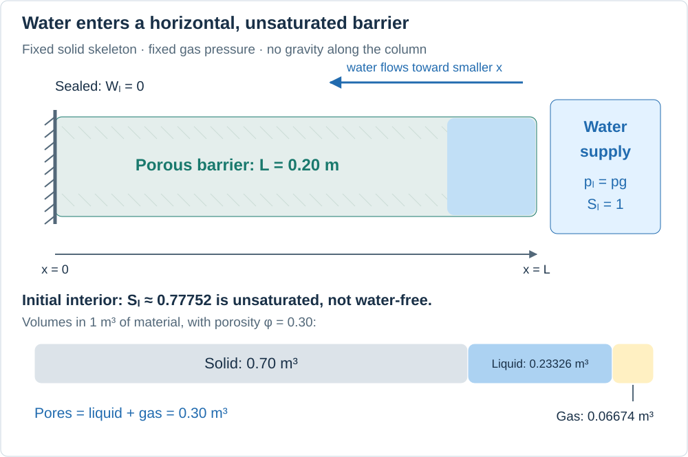
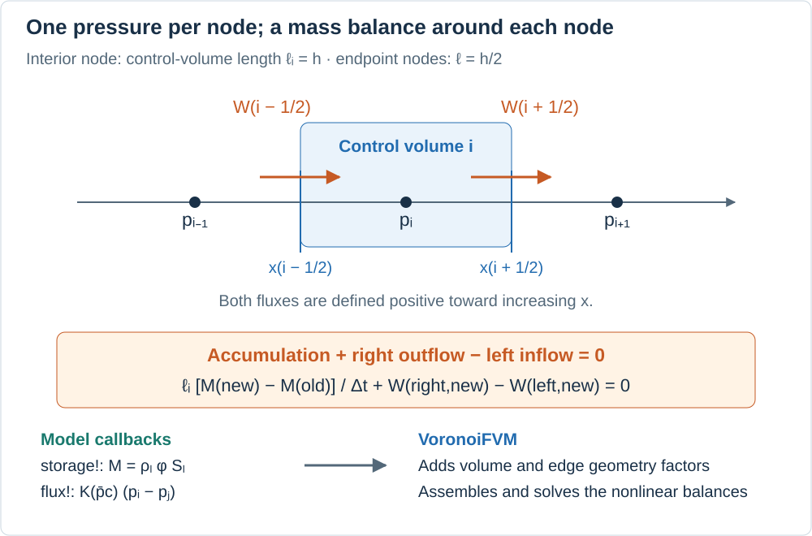
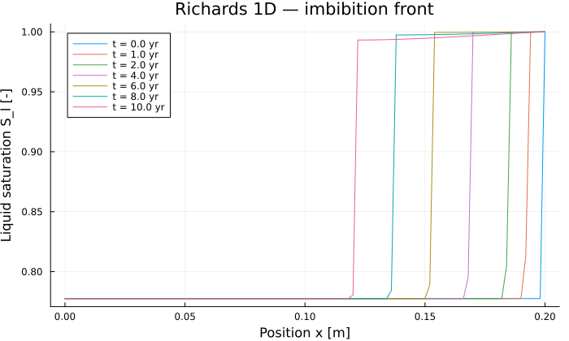

Richards 1D: how water enters an unsaturated barrier
Place one end of a porous material in contact with water. Water enters its pores and progressively wets the interior, even if the specimen is horizontal. This process is imbibition. Here we simulate it in a 20 cm containment barrier with very low permeability, using PoroMechanics and VoronoiFVM.
This tutorial assumes basic derivatives, integrals, and matrix algebra. We will connect the pore-scale picture to mass conservation, explain the constitutive curves, and derive the finite volume equations actually solved by the program. Unlike the Biot example, this model has no displacement unknown: the skeleton is rigid and porosity is fixed. Unlike the non-isothermal drying example, temperature and gas pressure do not evolve.
1. Understand the experiment before the equations

The reservoir is on the right. Arrows indicate the direction of water entry, not computed velocities. The pore-volume fractions use the initial interior state.
The coordinate $x$ increases from left to right along $0\le x\le L$, with $L=0.20$ m. There is one unknown, the liquid pressure $p_l(x,t)$ [Pa]. Gas occupies the rest of the pores, but its pressure $p_g=10^5$ Pa is prescribed and uniform. This is the Richards approximation: solve only the liquid balance while assuming that gas pressure equilibrates sufficiently quickly. The code does not solve a gas mass balance or predict trapped-gas compression.
| Quantity | Definition | Unit |
|---|---|---|
| Porosity $\phi$ | Pore volume divided by total material volume | — |
| Liquid saturation $S_l$ | Liquid volume divided by pore volume | — |
| Volumetric water content $\theta=\phi S_l$ | Liquid volume divided by total material volume | — |
| Capillary pressure $p_c=p_g-p_l$ | Gas pressure minus liquid pressure | Pa |
For example, $\phi=0.30$ and $S_l=0.80$ mean that one cubic meter of material contains 0.24 m³ of liquid, 0.06 m³ of gas, and 0.70 m³ of solid. Saturation and porosity are different fractions: full saturation means that all pores contain water, not that the solid has disappeared.
Boundary and initial conditions
| Location | Condition | Physical meaning |
|---|---|---|
| Left, $x=0$ (region 1) | $W_l=0$ | No liquid crosses the left end |
| Right, $x=L$ (region 2) | $p_l=p_g$ | A water supply maintains $p_c=0$ and $S_l=1$ |
| Interior at $t=0$ | $p_l=-7.611930\times10^7$ Pa | Uniform initial suction |
The left condition is a zero-flux or Neumann condition. The right condition is a prescribed-value or Dirichlet condition: the reservoir fixes pressure, not the incoming flow rate. That rate is determined by the solution.
The script applies the right boundary value before the first solve. Consequently, the initial array is uniform only at the other nodes. This sudden boundary loading creates a steep initial pressure gradient near the reservoir.
The initial material is unsaturated, not empty of water. The retention law below gives $S_{l,0}\approx0.77752$, so about 77.8% of its pore volume already contains liquid. The older shorthand “dry state” would be misleading here. Negative modeled liquid pressure represents capillary suction in this pressure convention; it does not imply negative saturation or negative water mass.
2. Derive the water balance
A fixed material volume
Take a slice of length $dx$ and cross-sectional area $A$. Its water mass is $\rho_l\phi S_l A\,dx$. The density $\rho_l$ and porosity $\phi$ are constant in this example. Define $W_l$ as mass flux per unit cross-sectional area, positive toward increasing $x$. Its units are kg/(m²·s).
For any fixed interval $[a,b]$, conservation without sources is
\[\frac{d}{dt}\int_a^b\rho_l\phi S_l\,A\,dx =A W_l(a,t)-A W_l(b,t).\]
This is “accumulation = inflow minus outflow”. Divide by constant $A$, apply the fundamental theorem of calculus, and require the identity for every interval:
\[\boxed{\frac{\partial}{\partial t}(\rho_l\phi S_l) +\frac{\partial W_l}{\partial x}=0.}\]
Unlike the deforming volume in Biot poroelasticity, this material volume is fixed by assumption. There is no $b\dot\varepsilon_v$ term. Water storage changes only because liquid replaces gas in the pores; neither liquid compressibility nor changes of porosity are included.
Darcy flow and its direction
Darcy's law relates flow to a driving pressure gradient. For a possibly vertical one-dimensional problem, write its mass-flux form as
\[W_l=-K_l(p_c)\left(\frac{\partial p_l}{\partial x}-\rho_l g_x\right), \qquad K_l(p_c)=\frac{\rho_l k_{\mathrm{int}}k_{rl}(p_c)}{\mu_l}.\]
Here $g_x$ is the signed component of gravitational acceleration along the coordinate, $k_{\mathrm{int}}$ [m²] is intrinsic permeability, and $\mu_l$ [Pa·s] is liquid viscosity. The dimensionless factor $k_{rl}$ describes the reduction of liquid mobility when the pores are not fully water-filled.
$K_l$ has units kg/(m·s·Pa): it multiplies a pressure gradient to produce a mass flux. It is not the hydraulic conductivity in m/s often used with a hydraulic-head gradient. The Darcy volume flux is $q_l=W_l/\rho_l$ [m/s]. Neither flux is the velocity of an individual water particle.
This barrier is horizontal, so gravity = 0.0. Initially pressure increases toward the right reservoir: $\partial_xp_l>0$, hence $W_l<0$. Water flows from right to left, toward the region with stronger capillary suction. It does not need a gravity term to enter the barrier.
Combining Darcy's law with conservation gives the equation implemented here:
\[\boxed{\frac{\partial}{\partial t} \left[\rho_l\phi S_l(p_g-p_l)\right] -\frac{\partial}{\partial x} \left[K_l(p_g-p_l)\frac{\partial p_l}{\partial x}\right]=0.}\]
Pressure-dependent storage and diffusion
Because $p_g$ is fixed, $\partial_t p_c=-\partial_t p_l$. The chain rule gives
\[C_p(p_l)=-\rho_l\phi\frac{dS_l}{dp_c},\qquad C_p(p_l)\frac{\partial p_l}{\partial t} =\frac{\partial}{\partial x}\left(K_l(p_c)\frac{\partial p_l}{\partial x}\right).\]
Since saturation decreases with capillary pressure, $dS_l/dp_c\le0$ and $C_p\ge0$. Its units are kg/(m³·Pa); it measures the increase of stored mass per bulk volume when liquid pressure rises. This is not the constant storage coefficient $N$ of the Biot example.
Where $C_p>0$, freezing the coefficients locally suggests a diffusivity $D=K_l/C_p$ [m²/s] and a time scale $L^2/D$. Both coefficients vary with state, so there is no single constant diffusion coefficient for the whole simulation. Small permeability alone does not specify a universal consolidation or wetting time. On the saturated branch the present storage is constant and $C_p=0$; the equation locally becomes a pressure-equilibrium equation rather than a compressible-water storage model. The code discretizes the original stored-mass difference, avoiding division by a capacity that can vanish.
3. Two constitutive curves, two different roles
Retention: how much water is present?
The Van Genuchten retention law supplies the actual liquid saturation:
\[S_l(p_c)=\begin{cases} 1,&p_c\le0,\\ \left[1+(p_c/a_S)^{n_S}\right]^{-m_S},&p_c>0, \end{cases} \qquad n_S=\frac{1}{1-m_S}.\]
Here $a_S$ is a pressure scale and $m_S$ controls the curve's shape. The constructor VanGenuchten(a_S, m_S) computes $n_S$ automatically. This example uses no extra residual-saturation offset: the function returns $S_l$ directly. There is no sharp air-entry threshold at $a_S$ in this smooth expression.
Relative permeability: how easily can water move?
The Mualem law used here first calculates an internal effective saturation $S_{e,k}$, then the relative permeability:
\[S_{e,k}=\left[1+(p_c/a_k)^{n_k}\right]^{-m_k},\qquad n_k=\frac{1}{1-m_k},\qquad p_c>0,\]
\[k_{rl}=\sqrt{S_{e,k}} \left[1-\left(1-S_{e,k}^{1/m_k}\right)^{m_k}\right]^2.\]
For $p_c\le0$, the implementation returns $k_{rl}=1$. At extremely small $S_{e,k}<10^{-14}$, it returns zero to avoid a singular square-root derivative.
Do not substitute the retention saturation $S_l$ directly into this example's Mualem expression. The two fitted curves deliberately use different parameters, so $S_{e,k}$ is an internal variable of the mobility law, not the actual liquid fraction of the pores. In the more usual construction where both laws share their parameters and residual saturation is zero, those saturations coincide. PFLOTRAN's constitutive-relations guide provides the standard Van Genuchten and Mualem forms and the effective-saturation normalization used when residual saturation is included.
Material values and an initial-state calculation
| Symbol | Code expression or field | Value | Unit |
|---|---|---|---|
| $\phi$ | phi | 0.30 | — |
| $\rho_l$ | rho_l | 1,000 | kg/m³ |
| $k_{\mathrm{int}}$ | k_int | $10^{-20}$ | m² |
| $\mu_l$ | mu_l | $10^{-3}$ | Pa·s |
| $p_g$ | p_g | $10^5$ | Pa |
| $a_S,m_S$ | VanGenuchten(1.5e6, 0.06) | $1.5\times10^6,\;0.06$ | Pa, — |
| $a_k,m_k$ | Mualem(3.0e6, 0.5) | $3.0\times10^6,\;0.5$ | Pa, — |
Thus $n_S\approx1.06383$ while $n_k=2$. They are different exponents. Initially, the interior has $p_c=7.621930\times10^7$ Pa and approximately
\[S_l=0.77752,\qquad S_{e,k}=0.03933,\qquad k_{rl}=1.1872\times10^{-7}.\]
Despite substantial stored water, liquid mobility is very small under these constitutive choices. This explains why “water already present” does not imply “water moves easily”. The curves are prescribed material laws for an illustrative barrier; applying them to another material requires suitable parameter data.
4. From an integral balance to finite volumes

Each node stores one pressure. Fluxes cross control-volume faces halfway between neighboring nodes. This drawing is schematic, not a pressure or saturation profile.
The code creates $N=101$ equally spaced nodes, hence 100 intervals of length $h=L/(N-1)=0.002$ m. VoronoiFVM associates each interior node with a control volume extending halfway toward its neighbors. Per unit cross-sectional area, its volume is a length $\ell_i=h$; endpoint control volumes have length $h/2$.
Integrate the conservation law over the control volume around node $i$. Denote $M(p)=\rho_l\phi S_l(p_g-p)$ and orient every interface flux toward increasing $x$. The semidiscrete balance is
\[\ell_i\frac{dM(p_i)}{dt}+W_{i+1/2}-W_{i-1/2}=0.\]
The two interface terms are outflow to the right minus inflow from the left. A shared interface enters the neighboring balances with opposite signs, so its contributions cancel when balances are added. This is the conservation mechanism of the finite volume assembly.
The actual two-point flux
For the edge joining $x_i$ to $x_j>x_i$, the implementation evaluates mobility at the mean capillary pressure, not the mean of the two mobilities:
\[\overline p_c=p_g-\frac{p_i+p_j}{2},\qquad W_{i\to j}=K_l(\overline p_c)\frac{p_i-p_j}{x_j-x_i}.\]
Generally $K_l((p_{c,i}+p_{c,j})/2)$ is not equal to $(K_l(p_{c,i})+K_l(p_{c,j}))/2$ because the law is nonlinear. This choice is part of the numerical model and matters at steep wetting fronts.
The model's flux! callback returns K * (pl1 - pl2) in this horizontal case. VoronoiFVM supplies the edge geometry factor, including division by edge length. Adding that division again inside the callback would count it twice. Similarly, storage! returns stored mass per bulk volume, and the backend supplies the control-volume measure. bcondition! imposes the right boundary pressure; unnamed boundaries have zero liquid flux.
Backward Euler and Newton iterations
Backward Euler evaluates the flux at the new time and uses a difference of stored masses. For an unconstrained node, the residual is
\[R_i(p^{n+1})= \ell_i\frac{M(p_i^{n+1})-M(p_i^n)}{\Delta t} +W_{i+1/2}^{n+1}-W_{i-1/2}^{n+1}=0.\]
This uses the difference of the nonlinear storage function, not merely an old capacity times a pressure increment. At prescribed-pressure nodes the boundary constraint determines the pressure; reservoir exchange accounts for the mass needed to maintain it. A zero residual of the pressure constraint is not evidence of zero physical inflow.
The equations are nonlinear because pressure changes both storage and mobility. At Newton iteration $k$, solve
\[J(p^{(k)})\,\delta p=-R(p^{(k)}),\qquad p^{(k+1)}=p^{(k)}+\delta p, \qquad J_{ij}=\frac{\partial R_i}{\partial p_j}.\]
The solver can damp updates and adapt the time step when needed. Automatic differentiation provides derivatives of the implemented constitutive laws for the Jacobian; it does not remove discretization error or guarantee Newton convergence. Although the conservation law can also be written in a weak finite element form, this example uses the control-volume balance above, not the displacement–pressure FEM assembly of the Biot tutorial.
5. Run the example and identify the library's role
From the repository root, using Julia 1.12 or newer:
julia --project=examples -e 'using Pkg; Pkg.develop(path="."); Pkg.instantiate()'
julia --project=examples examples/richards_1d/run.jlOn a machine without a graphical display, prefix the second command with GKSwstype=100. The program prints water uptake and front diagnostics and constructs a saturation plot. In an interactive Julia session, display p or use savefig(p, "richards_saturation.png") after including the script. The documentation build executes this example and displays its final plot.
using PoroMechanics
using VoronoiFVM
using ExtendableGrids
using PrintfConfigure an existing model
RichardsModel is implemented in the package. It supplies storage!, flux!, and bcondition!; this example supplies material data, geometry, and boundary values. fvm_system(model, grid) connects those callbacks to VoronoiFVM. There is no need to define a new physics type for another column with the same laws.
dirichlet = ((2, p_g),) is a tuple containing one boundary/value pair: prescribe liquid pressure p_g on region 2. The gas pressure remains a separate constant parameter. VanGenuchten and Mualem store coefficients with parametric numeric types, allowing automatic differentiation with respect to pressure and, in appropriate workflows, material parameters. Their coefficient values are fields, not numerical values encoded directly as Julia type parameters.
richards_material(; p_g = 1.0e5) = RichardsModel(;
phi = 0.30, # porosity [-]
rho_l = 1.0e3, # liquid density [kg/m³]
k_int = 1.0e-20, # intrinsic permeability [m²]
mu_l = 1.0e-3, # dynamic viscosity [Pa·s]
p_g = p_g, # gas pressure [Pa]
gravity = 0.0, # horizontal column
retention = VanGenuchten(1.5e6, 0.06),
rel_perm = Mualem(3.0e6, 0.5),
dirichlet = ((2, p_g),), # full saturation at x = L
)richards_material (generic function with 1 method)6. Construct the grid, initial state, and solver controls
run_richards returns (tsol, grid, model, tsave, an). The last entry is the conversion factor $1\ \mathrm{year}=31\,536\,000$ s, a 365-day year. t_max_ans is the duration in years; N is the number of nodes, not the number of intervals. The default call solves ten years on a 20 cm barrier.
unknowns(sys) allocates one pressure value at each node. tsave contains requested output times, with the final time added if necessary. The solver takes additional adaptive steps between those times: entries of tsol.t need not correspond one-to-one with entries of tsave.
| Control | Value | What it controls |
|---|---|---|
Δt | $10^6$ s (about 11.6 days) | Initial proposed time step |
Δt_min | 1 s | Minimum permitted time step |
Δt_max | 1 year | Maximum permitted time step |
Δu_opt | $10^6$ Pa | Target size of pressure change between successive time states |
reltol | $10^{-4}$ | Newton-update tolerance relative to the first Newton update |
abstol | $10^{-8}$ | Absolute Newton-update tolerance, in pressure units here |
These meanings follow the installed VoronoiFVM solver controls. Δu_opt guides adaptive stepping; it is not a bound on the error relative to an exact solution. Similarly, reltol is not a relative tolerance on saturation or total water mass. Backward Euler is first-order accurate in time. Resolving its nonlinear equations accurately and resolving the transient accurately are separate requirements.
The chosen update target is about 1.3% of the initial pressure range. A smaller target generally increases the number of steps and may improve time resolution; a convergence comparison is needed to decide whether that extra cost is useful. Small conductivity and strongly varying storage/mobility can make the solve difficult, especially at a sudden wetting boundary. verbose=true exposes solver iterations and step changes for diagnosis.
"""
run_richards(; L, N, t_max_ans, verbose)
- `L` : column length [m] (default: 0.2)
- `N` : number of mesh nodes (default: 101)
- `t_max_ans` : simulated duration in 365-day years (default: 10)
- `verbose` : print Newton iterations and time steps
Returns `(tsol, grid, model, tsave, an)`.
"""
function run_richards(; L = 0.2, N = 101, t_max_ans = 10, verbose = false)
m = richards_material()
grid = simplexgrid(range(0.0, L; length = N))
sys = fvm_system(m, grid)
# Initial condition: p_l = −7.611930e7 Pa (unsaturated interior)
inival = unknowns(sys)
inival[1, :] .= -7.611930e7
inival[1, end] = m.p_g # pre-apply the right-hand BC
an = 3.1536e7 # one year in seconds
t_max = t_max_ans * an
# Output times up to t_max
all_saves = [0.0, 1an, 2an, 4an, 6an, 8an, 10an, 20an, 40an, 50an, 100an]
tsave = filter(t -> t ≤ t_max + 1.0, all_saves)
tsave[end] != t_max && push!(tsave, t_max)
ctrl = VoronoiFVM.SolverControl(;
Δt = 1.0e6,
Δt_max = an,
Δt_min = 1.0,
# The total range of p_l is ~7.7e7 Pa.
# Δu_opt = 1e5 Pa means a 0.13 % update target and many small steps
# (27 000+ steps for 10 years in the original comparison).
# Use 1e6 Pa ≈ 1.3 % here; verify time resolution by refinement.
Δu_opt = 1.0e6,
reltol = 1.0e-4,
abstol = 1.0e-8,
verbose = verbose,
)
tsol = solve(sys; inival, times = tsave, control = ctrl)
return tsol, grid, m, tsave, an
end
tsol, grid, model, tsave, an = run_richards()([-7.61193e7 -7.61193e7 … -7.61193e7 100000.0;;; -7.61193e7 -7.61193e7 … -7.544217414151426e7 100000.0;;; -7.61193e7 -7.61193e7 … -7.460678802681065e7 100000.0;;; … ;;; -7.61193e7 -7.61193e7 … 93342.70855563146 100000.0;;; -7.61193e7 -7.61193e7 … 93331.7571265825 100000.0;;; -7.61193e7 -7.61193e7 … 93393.01972750867 100000.0], ExtendableGrids.ExtendableGrid{Float64, Int32}(dim=1, nnodes=101, ncells=100, nbfaces=2), RichardsModel{Float64, Float64, VanGenuchten{Float64}, Mualem{Float64}, Tuple{Tuple{Int64, Float64}}}(0.3, 1000.0, 1.0e-20, 0.001, 100000.0, 0.0, 1, VanGenuchten{Float64}(1.5e6, 1.0638297872340425, 0.06), Mualem{Float64}(3.0e6, 0.5), ((2, 100000.0),)), [0.0, 3.1536e7, 6.3072e7, 1.26144e8, 1.89216e8, 2.52288e8, 3.1536e8], 3.1536e7)7. Read the solution and measure water uptake
tsol[1, i, it] is pressure at node i and stored time index it; the first index selects the only species. tsol(t) interpolates the pressure state at physical time t in seconds. To obtain saturation, evaluate the retention law at model.p_g - pressure. Interpolating pressure and then applying a nonlinear retention law is generally not identical to interpolating saturation itself.
The helper below integrates $\theta=\phi S_l$ along the column:
\[w(t)=\int_0^L\phi S_l(x,t)\,dx.\]
Its unit is meters of water, meaning water volume per unit cross-sectional area. The water mass per area is $\rho_l w$ [kg/m²]; for area $A$, the total water mass is $\rho_l A w$. The trapezoidal weights coincide with nodal control-volume lengths on this 1D grid. A fully saturated column has $w_{\mathrm{sat}}=\phi L=0.060$ m.
The initial value includes the already saturated right endpoint with its half-cell weight. That discrete initial water inventory therefore depends slightly on mesh spacing. Compare water uptake relative to each mesh's own initial state.
using Plots
xcoords = grid[Coordinates][1, :]
nn = length(xcoords)
sat_at(i, it) = liquid_saturation(model, model.p_g - tsol[1, i, it])
"""Column water content ∫ φ S_l dx [m], by the trapezoidal rule."""
function water_content(it)
return model.phi * sum(
(sat_at(i, it) + sat_at(i + 1, it)) / 2 *
(xcoords[i + 1] - xcoords[i]) for i in 1:(nn - 1)
)
endwater_content (generic function with 1 method)Define a front indicator before interpreting it
There is no separate front-position unknown. This helper finds the leftmost node where saturation exceeds the initial interior value by δ = 1e-3. Water enters at $x=L$, so this threshold-defined position moves toward smaller $x$ as the wetted region advances. Its resolution is limited by the node spacing, 2 mm here, and its value depends on the chosen threshold.
A front indicator at $x=0$ means the threshold has reached the left end, not that every pore is saturated. If no node passes the threshold, the helper returns $x=L$. Its internal name sl_dry refers to the unsaturated initial value, approximately 0.77752, rather than zero saturation.
function front_position(it; δ = 1.0e-3)
sl_dry = sat_at(1, 1)
i = findfirst(i -> sat_at(i, it) > sl_dry + δ, 1:nn)
return i === nothing ? xcoords[end] : xcoords[i]
endfront_position (generic function with 1 method)Print front position, water content, and one local probe
The loop selects the stored state nearest each requested time. The probe lies at approximately $x=0.18$ m. It is deliberately near the inlet, where a response is visible within the ten-year calculation. A mid-column probe can remain almost unchanged even while the material takes up water nearer the reservoir.
i_probe = round(Int, 0.9 * (nn - 1)) + 1 # a node the front does reach
@printf("t [years] | front x [m] | water content [m] | S_l[x=%.2f m]\n", xcoords[i_probe])
println("-"^72)
for t_s in tsave
it = argmin(abs.(tsol.t .- t_s))
@printf(
"%-14.4f | %11.4f | %17.6e | %.6f\n",
tsol.t[it] / an, front_position(it), water_content(it), sat_at(i_probe, it)
)
endt [years] | front x [m] | water content [m] | S_l[x=0.18 m]
------------------------------------------------------------------------
0.0000 | 0.2000 | 4.671799e-02 | 0.777521
1.0000 | 0.1920 | 4.713982e-02 | 0.777521
2.0000 | 0.1840 | 4.766841e-02 | 0.777521
4.0000 | 0.1680 | 4.872980e-02 | 0.999823
6.0000 | 0.1520 | 4.979170e-02 | 0.999785
8.0000 | 0.1360 | 5.083064e-02 | 0.998884
10.0000 | 0.1200 | 5.183032e-02 | 0.997843Check uptake without confusing it with full validation
For the default calculation, representative values are:
| Time [years] | Front indicator [m] | Water content $w$ [m] |
|---|---|---|
| 0 | 0.200 | 0.0467180 |
| 2 | 0.184 | 0.0476684 |
| 6 | 0.152 | 0.0497917 |
| 10 | 0.120 | 0.0518304 |
These values were obtained on the supplied 101-node setup with Julia 1.12.7 and VoronoiFVM 3.5.2 on macOS ARM64. They describe this numerical solution, not an experiment or a mesh-independent reference solution. The ten-year uptake is about $0.0051124$ m of water, or $5.1124$ kg/m², an increase of about 10.94% over the initial inventory.
The message below checks only whether total water content increased. It does not measure the mass-balance residual or prove time/mesh convergence. In particular, the default probe at 0.18 m approaches $S_l\approx0.9998$ around year 4, then falls slightly to about 0.9978 at year 10. Do not interpret this small reversal as established physical behavior: inspect spatial profiles and refine space and time before attributing it to the material.
it_end = length(tsol.t)
w_ini, w_fin = water_content(1), water_content(it_end)
x_front = front_position(it_end)
@printf("water content : %.6e → %.6e m (%+.2f %%)\n", w_ini, w_fin, 100 * (w_fin / w_ini - 1))
@printf("wetting front : x = %.4f m after %.1f years\n", x_front, tsol.t[it_end] / an)
if w_fin > w_ini
println("✓ the column took up water (imbibition confirmed)")
else
println("✗ WARNING: no water uptake")
endwater content : 4.671799e-02 → 5.183032e-02 m (+10.94 %)
wetting front : x = 0.1200 m after 10.0 years
✓ the column took up water (imbibition confirmed)Plot saturation profiles
The curves show where the additional liquid is stored. Read the axis direction carefully: the fixed saturated boundary is at the right edge. A steep rise in saturation is a transition resolved over mesh nodes, not an explicitly tracked sharp interface. The plot displays requested times, while tsol normally retains all accepted adaptive time states.
p = plot(;
xlabel = "Position x [m]",
ylabel = "Liquid saturation S_l [-]",
title = "Richards 1D — imbibition front",
legend = :topleft,
size = (700, 420),
)
for t_s in tsave
it = argmin(abs.(tsol.t .- t_s))
plot!(
p, xcoords, [sat_at(i, it) for i in 1:nn];
label = "t = $(round(tsol.t[it] / an; digits = 1)) yr",
)
end
p
8. Change the experiment and check numerical accuracy
In an interactive session started with julia --project=examples, from the repository root:
include("examples/richards_1d/run.jl") # also runs and plots the default case
long_sol, long_grid, long_model, long_times, _ =
run_richards(t_max_ans=100)Increasing t_max_ans changes the duration; increasing N changes spatial resolution. However, simply calling run_richards(N=201) failed at its first Newton solve with the original controls in the tested environment. A finer mesh changes the near-boundary problem; the same initial time step need not work. run_richards creates both its material and its controls internally, so it has no keyword argument for replacing SolverControl.
To expose those choices without changing the default calculation, build another system explicitly. The following 201-node example starts with a smaller step, limits step growth through the existing controls, and allows failed solves to be retried at smaller steps:
fine_model = richards_material()
fine_grid = simplexgrid(range(0.0, 0.2; length=201))
fine_sys = fvm_system(fine_model, fine_grid)
fine_initial = unknowns(fine_sys)
fine_initial[1, :] .= -7.611930e7
fine_initial[1, end] = fine_model.p_g
seconds_per_year = 3.1536e7
fine_times = [0, 1, 2, 4, 6, 8, 10] .* seconds_per_year
fine_control = VoronoiFVM.SolverControl(
Δt=1.0e3, Δt_min=0.01, Δt_max=seconds_per_year / 2,
Δu_opt=5.0e5, reltol=1.0e-4, abstol=1.0e-8,
handle_exceptions=true,
)
fine_sol = solve(fine_sys; inival=fine_initial, times=fine_times,
control=fine_control)
@assert fine_sol.t[end] == fine_times[end] "The transient stopped early"With handle_exceptions=true, the solver can return a partial transient if retries cannot proceed, which is why the final-time check is essential. The default helper leaves this option false, so a failed Newton solve raises an error. The refined example above reached ten years in the tested environment. To change permeability, edit richards_material, or construct a RichardsModel with the desired parameters before calling fvm_system.
The original sat_at, water_content, and front_position helpers use the global tsol, model, and xcoords from the first run. They do not automatically switch to fine_sol. For independent post-processing, explicitly use the returned values:
t_query = 10 * seconds_per_year
fine_pressure = fine_sol(t_query)[1, :]
fine_saturation = [liquid_saturation(fine_model, fine_model.p_g - pl)
for pl in fine_pressure]
fine_x = vec(fine_grid[Coordinates][1, :])
fine_water = fine_model.phi * sum(
(fine_saturation[i] + fine_saturation[i + 1]) / 2 *
(fine_x[i + 1] - fine_x[i]) for i in 1:(length(fine_x) - 1)
)The default setup gives $w(10\ \mathrm{years})\approx0.0518304$ m, whereas the refined setup above gives approximately 0.0564039 m. This sizeable difference is a warning against treating the default profile as a converged result. Both space and time controls changed in this comparison, so it does not isolate their contributions or establish an order of convergence. It provides a working starting point for the separate checks below, not a certified reference solution.
Separate the questions each check answers
- Did the solve finish? Check that the last stored time reaches the requested final time, inspect warnings, and check finite pressures and saturations. A program returning a solution object is not, in every solver configuration, sufficient evidence of a completed transient.
- Is time resolution adequate? At fixed mesh and duration, decrease both
Δu_optandΔt_max; compare pressure and saturation profiles and water uptake at the same physical times. Tightening only Newton tolerances answers a different question. The initial boundary step deserves particular attention. - Is spatial resolution adequate? Compare 101 and 201 nodes, then refine further if needed. Account for the initial boundary half-cell inventory and the nodal front indicator's resolution. Inspect the small probe reversal as well as the total uptake; a plausible total can hide local numerical artifacts.
- Does mass balance close? With zero left flux, the continuous balance is $\rho_l[w(t)-w(0)]=-\int_0^t W_l(L,\tau)\,d\tau$. The right-boundary inflow is negative under our sign convention. A numerical audit should use boundary exchange consistent with the assembled discrete balances, including the prescribed boundary node's storage, rather than an unrelated flux estimate. This audit is not computed by the simple uptake message above.
- Is the physical model appropriate? Check the assumptions of fixed gas pressure, rigid skeleton, constant liquid density, no gravity in this case, and single-valued constitutive curves. Gas trapping, swelling, hysteresis, and heat effects require additional modeling; the present example does not represent those processes.
At a stationary state, conservation and the sealed left boundary imply zero flux throughout. Where conductivity is positive, pressure is then uniform and equal to $p_g$; this model's equilibrium is full saturation. The ten-year profiles have not reached that state. This is imbibition in a rigid body, not the mechanically coupled consolidation of the Biot example.
The regression suite compares saved pressure signatures against a stored numerical reference. It checks reproducibility, not physical validity or discretization convergence. Run it with julia --project -e 'using Pkg; Pkg.test(test_args=["regression"])'. The regression notes and test/regression.jl document the reference procedure and tolerances.
9. Short exercises
- For 1 m³ of this material at the initial interior saturation, calculate liquid and gas volumes. You should find approximately 0.23326 m³ and 0.06674 m³.
- Explain why $W_l<0$ at the right inlet although the total water content grows. Check the signs using the integral mass balance.
- Compute $n_S$ and $n_k$ from their respective $m$ values. Why would using the same exponent in both curves change this particular model?
- Convert the ten-year increase in water content into total added water mass for a cross-sectional area of 0.01 m². The result is approximately 0.0511 kg.
- Change the front threshold from $10^{-3}$ to $10^{-2}$. Explain why the reported front can move even though the pressure solution is unchanged.
- Compare finer meshes and time controls before deciding whether the small decrease at the 0.18 m probe is resolved behavior. Which of the current diagnostics would fail to reveal that decrease?
Regenerate the two conceptual diagrams with python3 examples/richards_1d/draw_schematics.py. The saturation profile plot is computed by the Julia example itself.